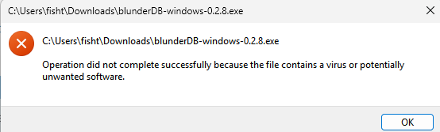

10. Παράρτημα Windows: Εσφαλμένη ανίχνευση του blunderDB ως κακόβουλου λογισμικού
Σημείωση
Τα παρακάτω ισχύουν για τα λειτουργικά συστήματα Windows 10 και 11.
Τα Windows απαιτούν πλέον από τις εταιρείες έκδοσης λογισμικού ή από ανεξάρτητους προγραμματιστές να πιστοποιούν ψηφιακά τις εφαρμογές τους ή ακόμη και να τις διανέμουν μέσω του Windows Store. Συνιστάται επομένως να απευθύνεστε σε εξωτερικές εταιρείες για την απόκτηση ψηφιακού πιστοποιητικού, με κόστος αρκετών εκατοντάδων ευρώ (βλέπε για παράδειγμα https://learn.microsoft.com/en-us/archive/blogs/ie_fr/certificats-de-signature-de-code-ev-extended-validation-et-microsoft-smartscreen ).
Partageant blunderDB gratuitement, je ne souhaite pas m’orienter vers ces possibilités onéreuses. Une piste gratuite réservée aux logiciels libres (la SignPath Foundation, https://signpath.org/) est à l’étude pour signer les binaires Windows sans frais ; tant qu’elle n’est pas en place, il est fort probable que Windows vous avertisse d’un potentiel danger, voire bloque complètement l’exécution de blunderDB. Les sections suivantes expliquent les opérations à réaliser pour passer outre les réticences de Windows.
10.1. Προειδοποίηση Windows SmartScreen
Μετά τη λήψη του blunderDB, κατά την εκτέλεσή του, ενδέχεται τα Windows να εμφανίσουν μια προειδοποίηση όπως:

Αν θέλετε να επιτρέψετε ένα συγκεκριμένο εκτελέσιμο που έχει μπλοκαριστεί από το SmartScreen:
Δοκιμάστε να εκτελέσετε το εκτελέσιμο:
Όταν προσπαθείτε να εκκινήσετε το εκτελέσιμο, το SmartScreen ενδέχεται να το μπλοκάρει και να εμφανίσει μια προειδοποίηση.
Κάντε κλικ στο «Περισσότερες πληροφορίες»:
Στο παράθυρο προειδοποίησης του SmartScreen, κάντε κλικ στο Περισσότερες πληροφορίες.
Επιλέξτε «Εκτέλεση ούτως ή άλλως»:
Αν εμπιστεύεστε το εκτελέσιμο, κάντε κλικ στο Εκτέλεση ούτως ή άλλως για να παρακάμψετε την προειδοποίηση του SmartScreen για αυτή τη φορά.
10.2. Μπλοκάρισμα από το Windows Defender
Για ορισμένες ρυθμίσεις ασφαλείας των Windows, ακόμη και μετά την παράκαμψη του SmartScreen (βλέπε προηγούμενη ενότητα), το Windows Defender ενδέχεται να εμποδίσει την εκτέλεση του blunderDB με μηνύματα όπως:

ή ακόμη:

ή ακόμη και να το θέσει σε καραντίνα.
Το Windows Defender είναι γνωστό ότι προκαλεί ψευδώς θετικά αποτελέσματα. Αυτό το πρόβλημα αναφέρεται ρητά στις Συχνές Ερωτήσεις του επίσημου ιστότοπου της Golang ( https://go.dev/doc/faq#virus ) ή σε δελτία Github ορισμένων έργων που έχουν προγραμματιστεί σε Go ( https://github.com/golang/vscode-go/issues/3182 ).
Αν θέλετε να εμποδίσετε την Ασφάλεια των Windows να σαρώσει το blunderDB:
Ανοίξτε την Ασφάλεια των Windows:
Πηγαίνετε στο Έναρξη και πληκτρολογήστε Ασφάλεια των Windows.

Μεταβείτε στην «Προστασία από ιούς και απειλές»:
Κάντε κλικ στο Προστασία από ιούς και απειλές.

Διαχείριση ρυθμίσεων:
Κάντε κύλιση προς τα κάτω και κάντε κλικ στο Διαχείριση ρυθμίσεων στην ενότητα Ρυθμίσεις προστασίας από ιούς και απειλές.

Προσθήκη ή κατάργηση εξαιρέσεων:
Κάντε κύλιση μέχρι την ενότητα Εξαιρέσεις και κάντε κλικ στο Προσθήκη ή κατάργηση εξαιρέσεων.

Προσθήκη εξαίρεσης:
Κάντε κλικ στο Προσθήκη εξαίρεσης και επιλέξτε Αρχείο. Στη συνέχεια, μεταβείτε στο εκτελέσιμο που θέλετε να εξαιρέσετε και επιλέξτε το.


10.3. Vérifier l’intégrité du téléchargement (SHA256)
Chaque binaire publié sur la page des releases est accompagné d’un fichier
.sha256 contenant son empreinte cryptographique. Vérifier cette empreinte
permet de s’assurer que le fichier téléchargé est authentique et n’a pas été
altéré, ce qui constitue une garantie utile en l’absence de signature de code.
Sous Windows (PowerShell), dans le dossier de téléchargement :
Get-FileHash .\blunderDB-windows-<version>.exe -Algorithm SHA256
Comparez la valeur affichée avec celle du fichier
blunderDB-windows-<version>.exe.sha256. Les deux doivent être identiques.
Sous Linux ou macOS :
sha256sum -c blunderDB-linux-<version>.sha256 # Linux
shasum -a 256 -c blunderDB-macos-<version>.zip.sha256 # macOS